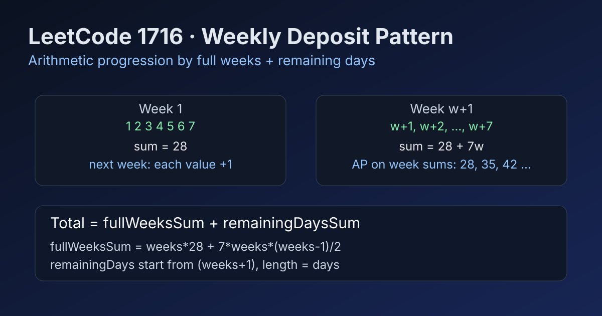

LeetCode 1716: Calculate Money in Leetcode Bank (Arithmetic Progression by Full Weeks + Remaining Days)
LeetCode 1716MathSimulationArithmetic ProgressionToday we solve LeetCode 1716 - Calculate Money in Leetcode Bank.
Source: https://leetcode.com/problems/calculate-money-in-leetcode-bank/

English
Problem Summary
You save money for n days. On each Monday you deposit one dollar more than last Monday; inside the same week, each next day is +1 from previous day. Return total money after n days.
Key Insight
The deposits are structured by weeks. Every full week is an arithmetic sequence of 7 numbers, and each new week shifts the whole sequence up by 1. So we can compute:
1) sum of all full weeks, and
2) sum of the remaining days in the last partial week.
Brute Force and Limitations
Direct simulation is easy: loop day by day and add deposit value. It is O(n). It passes constraints but misses the cleaner mathematical pattern.
Optimal Formula Steps
Let weeks = n / 7, days = n % 7.
Full weeks:
- Week 1 sum = 1+2+...+7 = 28
- Week sums are 28, 35, 42, ... (difference 7)
- Total = weeks * 28 + 7 * weeks * (weeks - 1) / 2
Remaining days start from weeks + 1:
- Sum = arithmetic progression of length days.
Complexity Analysis
Time: O(1).
Space: O(1).
Common Pitfalls
- Mixing up weeks and days when computing partial week start value.
- Using floating point unnecessarily; integer arithmetic is enough.
- Off-by-one on Monday base value (weeks + 1, not weeks).
Reference Implementations (Java / Go / C++ / Python / JavaScript)
class Solution {
public int totalMoney(int n) {
int weeks = n / 7;
int days = n % 7;
int weekOne = 28; // 1+2+...+7
int fullWeeks = weeks * weekOne + 7 * weeks * (weeks - 1) / 2;
int start = weeks + 1;
int remaining = days * (2 * start + (days - 1)) / 2;
return fullWeeks + remaining;
}
}func totalMoney(n int) int {
weeks := n / 7
days := n % 7
weekOne := 28 // 1+2+...+7
fullWeeks := weeks*weekOne + 7*weeks*(weeks-1)/2
start := weeks + 1
remaining := days * (2*start + (days-1)) / 2
return fullWeeks + remaining
}class Solution {
public:
int totalMoney(int n) {
int weeks = n / 7;
int days = n % 7;
int weekOne = 28; // 1+2+...+7
int fullWeeks = weeks * weekOne + 7 * weeks * (weeks - 1) / 2;
int start = weeks + 1;
int remaining = days * (2 * start + (days - 1)) / 2;
return fullWeeks + remaining;
}
};class Solution:
def totalMoney(self, n: int) -> int:
weeks = n // 7
days = n % 7
week_one = 28 # 1+2+...+7
full_weeks = weeks * week_one + 7 * weeks * (weeks - 1) // 2
start = weeks + 1
remaining = days * (2 * start + (days - 1)) // 2
return full_weeks + remainingvar totalMoney = function(n) {
const weeks = Math.floor(n / 7);
const days = n % 7;
const weekOne = 28; // 1+2+...+7
const fullWeeks = weeks * weekOne + (7 * weeks * (weeks - 1)) / 2;
const start = weeks + 1;
const remaining = (days * (2 * start + (days - 1))) / 2;
return fullWeeks + remaining;
};中文
题目概述
连续存钱 n 天：每周一存的钱比上周一多 1，同一周内每天比前一天多 1。求 n 天后的总金额。
核心思路
这题天然按“整周 + 剩余天数”拆分。每个整周是长度为 7 的等差数列，而且下一周整体 +1，所以可以直接套等差求和。
暴力解法与不足
按天模拟累加，时间复杂度 O(n)。虽然可过，但没有利用题目的数学结构。
最优公式步骤
设 weeks = n // 7，days = n % 7。
整周总和：
- 第 1 周和为 28
- 各周和构成公差为 7 的等差数列
- 合计 weeks * 28 + 7 * weeks * (weeks - 1) / 2
剩余 days 天从 weeks + 1 开始再做一次等差求和。
复杂度分析
时间复杂度：O(1)。
空间复杂度：O(1)。
常见陷阱
- 剩余天数首项写错，应该从 weeks + 1 开始。
- 没必要用浮点数，整型运算即可。
- 周一基础值 off-by-one。
多语言参考实现（Java / Go / C++ / Python / JavaScript）
class Solution {
public int totalMoney(int n) {
int weeks = n / 7;
int days = n % 7;
int weekOne = 28; // 1+2+...+7
int fullWeeks = weeks * weekOne + 7 * weeks * (weeks - 1) / 2;
int start = weeks + 1;
int remaining = days * (2 * start + (days - 1)) / 2;
return fullWeeks + remaining;
}
}func totalMoney(n int) int {
weeks := n / 7
days := n % 7
weekOne := 28 // 1+2+...+7
fullWeeks := weeks*weekOne + 7*weeks*(weeks-1)/2
start := weeks + 1
remaining := days * (2*start + (days-1)) / 2
return fullWeeks + remaining
}class Solution {
public:
int totalMoney(int n) {
int weeks = n / 7;
int days = n % 7;
int weekOne = 28; // 1+2+...+7
int fullWeeks = weeks * weekOne + 7 * weeks * (weeks - 1) / 2;
int start = weeks + 1;
int remaining = days * (2 * start + (days - 1)) / 2;
return fullWeeks + remaining;
}
};class Solution:
def totalMoney(self, n: int) -> int:
weeks = n // 7
days = n % 7
week_one = 28 # 1+2+...+7
full_weeks = weeks * week_one + 7 * weeks * (weeks - 1) // 2
start = weeks + 1
remaining = days * (2 * start + (days - 1)) // 2
return full_weeks + remainingvar totalMoney = function(n) {
const weeks = Math.floor(n / 7);
const days = n % 7;
const weekOne = 28; // 1+2+...+7
const fullWeeks = weeks * weekOne + (7 * weeks * (weeks - 1)) / 2;
const start = weeks + 1;
const remaining = (days * (2 * start + (days - 1))) / 2;
return fullWeeks + remaining;
};
Comments